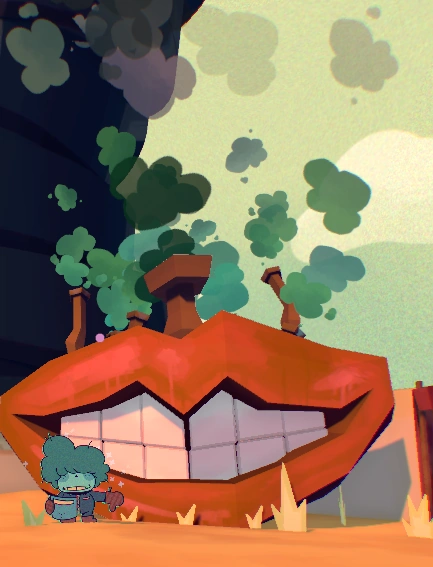
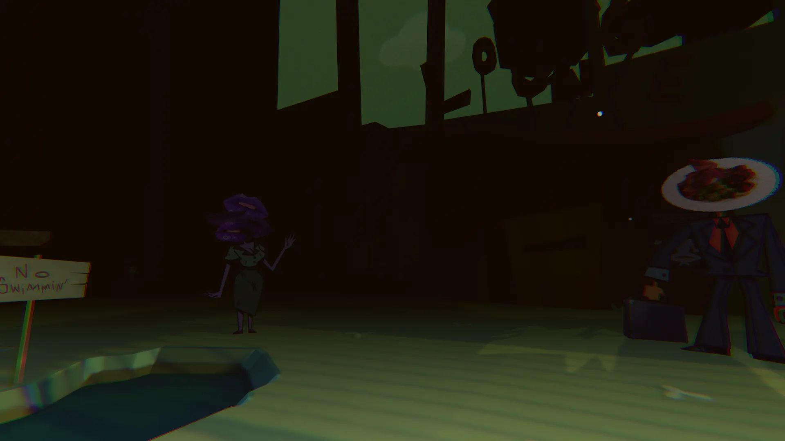

Purpose
"If smiles are contagious, then I am a bioweapon :-)."
The purpose of the Big Event is for Dr. Habit to collect the Habitians teeth. The reasons for him doing this are gone into more in depth on the Dr Habit page, but he wishes to do so to make his smile contagious. He hopes that, in making his smile big enough, he'll cause the whole world to smile once he does. It is unknown how many teeth Dr. Habit has stolen from people in the past, or how he did so, but it is evident he already has gotten a lot of teeth before The Big Event. This is evident in his smile he proudly shows off during the final stages of the game.
If the player cheers up all the habitians, they'll all leave before the final day, leaving only Dr. Habit and the player in the Habitat. In this event, Dr. Habit will get frustrated with the player.
Martha

Martha is sort of the "mascot" of the Habitat. She's shown saying various slogans and is mentioned in many of the Habitat PSA's. Dr. Habit is also shown to obsess over her, one example being the event which resulted in Kamal leaving his side. She plays a huge role in The Big Event, which is alluded to the entire game. The pipes on the top of her are meant to pump out a gas of some sort, This gas presumably being some sort of "laughing gas", leaving everyone loopy for when Habit comes in to take their teeth out. The affects of this gas are shown to the player in the non-canon endings if Habitians are left behind on the last day, the player seeing some of the habititans with their bodies malformed. These effects are most likely hallucinations as a result from Marthas gas. Martha also seems to be named after Dr Habits childhood bully, who made fun of him for not having many teeth.
If the player chooses to shove Dr Habit off of the balcony in his office, he will fall into Martha, destroying her and presumably killing him.

Resources
Most informmation on this page comes from Thisssssss website annd thisssssss website :-)